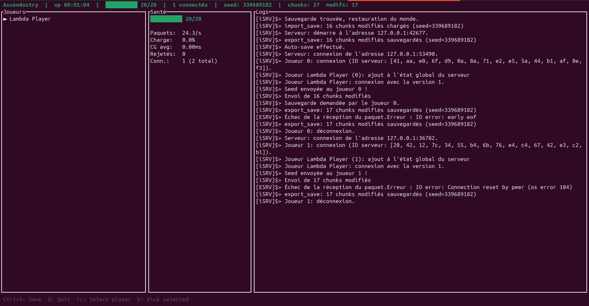

Ascendustry — Les récentes avancées
Posté le 20 juin 2026

Le précédent article sur le prédécesseur du projet datait du 6 mai et portait sur l'architecture réseau de Ascendustry. Depuis, le projet a changé de nom pour Ascendustry, et énormément de fonctionnalités ont été ajoutées — principalement côté serveur et gameplay. Voici un tour d'horizon de ce qui a été fait depuis.
Identité joueur et persistance
Le serveur gère désormais une véritable identité pour chaque joueur, via un système de handshake au moment de la connexion. Cela permet de :
- Sauvegarder l'état de chaque joueur individuellement
- Restaurer la position du joueur à sa reconnexion, évitant de réapparaître au spawn à chaque fois
- Associer un inventaire personnel à chaque joueur
Système d'inventaire complet
L'inventaire a été implémenté en quatre parties :
Parties 1 & 2 — Structures et réseau
Les structures d'inventaire sont sérialisables via Serde et échangées entre le client et le serveur grâce à deux nouveaux paquets réseau :
pub struct InventoryUpdate {
pub slot: u16,
pub item: Option<ItemStack>,
}
pub struct InventorySet {
pub slots: Vec<(u16, Option<ItemStack>)>,
}
L'inventaire est synchronisé en temps réel : casser un bloc envoie une InventoryUpdate au client, et le serveur peut envoyer un InventorySet complet pour initialiser l'état.
Parties 3 & 4 — Finalisation et synchronisation
Les bugs de add_item ont été corrigés, la gestion des stacks est fonctionnelle, et l'inventaire est correctement mis à jour lors du cassage d'un bloc.
Tests
Un fichier de tests unitaires couvre les cas limites de l'inventaire.
Protection anti-DDoS
Un système de rate limiting a été implémenté pour protéger le serveur contre les connexions abusives :
pub struct RateLimiter {
max_connections_per_ip: u32,
max_packets_per_second: u32,
connections: HashMap<IpAddr, ConnectionMetrics>,
}
La configuration est définie dans le fichier de config du serveur.
Dashboard TUI
Le serveur embarque désormais un dashboard en temps réel directement dans le terminal, construit avec Ratatui :
- Compteur de joueurs connectés, avec tendance sur la session
- Métriques réseau (paquets envoyés/reçus)
- Temps de tick moyen du serveur
- Taux de guard cycle réglé à 20 Hz pour économiser les ressources
Le composant utilise une architecture à deux threads : le serveur pousse les métriques via un canal, et le TUI les affiche de manière asynchrone et complètement détachée des autres threads.
pub struct ServerMetrics {
pub connected_players: u32,
pub peak_players: u32,
pub packets_sent: AtomicU64,
pub packets_received: AtomicU64,
pub tick_times: Vec<f32>,
}
Propreté et optimisations serveur
Plusieurs correctifs et optimisations ont été apportés :
- Déconnexion propre des joueurs — le state est correctement nettoyé
- Kick joueur — commande serveur pour expulser un joueur
- Guard cycle à 20 Hz au lieu de tourner en boucle serrée
- Sauvegarde avant arrêt — le monde est sauvegardé automatiquement quand le serveur s'arrête
- Correction de scope lock — un bug qui pouvait causer des deadlocks a été résolu